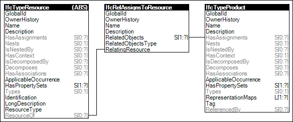

Link to this page
Link to this pageResource types may have assignments indicating re-usable product types for which occurrences may be sourced by occurrences of the resource type. An example of such assignment is a particular crane model that may be used for a crane equipment resource used for erecting steel.
Figure 77 illustrates an instance diagram.
 |
Figure 77 — Resource Type Assignment |